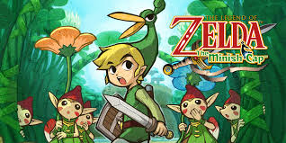
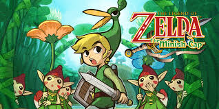

Porque me gustan los videojuegos?
Me gustan porque me hacen sentir bien, el poder distraerme con algo y hacerme olvidar todo lo malo se siente bien tambien me ayudan a relajarme, divertirme y en general hacerme sentir bien, tambien es bueno abrirse a un genero de videojuegos nuevo porque si descubres otro te puedes divertir mas como los juegos de explorar o juegos por turnos a mi se me hacen muy entretenidos y que no se vayan tan lineal

 
